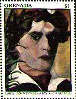
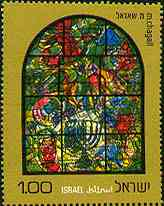
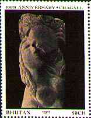
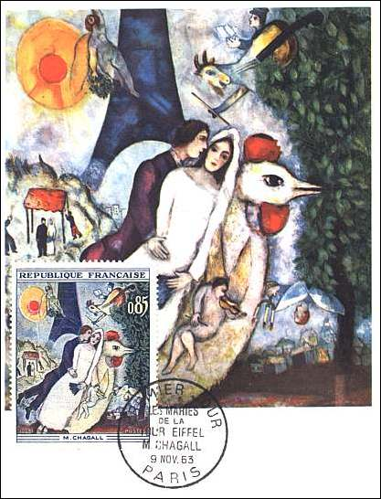
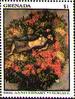
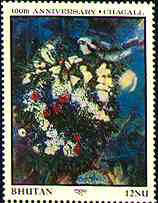

 |
1887 - 1985 |

|
Chagall,
Marc, French painter and designer of Russian
birth, distinguished for his Surrealistic inventiveness. He is recognized as one of the
most significant painters and graphic artists of the 20th century. His work is touched
with a humour and fantasy that finds a resonance in the subconscious. Chagall's personal
and unique imagery is often suffused with exquisite poetic inspiration. Chagall was born on July 7, 1887, in Vityebsk, Russia (now in Belarus), and was educated in art in St Petersburg and, from 1910, in Paris, where he remained until 1914. Between 1915 and 1917 he lived in St Petersburg; after the Russian Revolution he was director of the Art Academy in Vityebsk from 1918 to 1919 and was art director of the Moscow Jewish State Theatre from 1919 to 1922. Chagall painted several murals in the theatre foyer and executed the sets for numerous productions. In 1923, he moved to France, where he spent the rest of his life, except for a period of residence in the United States from 1941 to 1948. He died in St Paul de Vence, in the South of France, on March 28, 1985. Chagall's distinctive use of colour and form is derived partly from Russian |
 |
Expressionism and was influenced decisively by French Cubism. Crystallizing his style early, as in Candles in the Dark (1908, artist's collection), he later developed subtle variations. His numerous works represent characteristically vivid recollections of Russian-Jewish village scenes, as in I and the Village (1911, Museum of Modern Art, New York), and incidents in his private life, as in the print series Mein Leben (German for "My Life", 1922), in addition to treatments of Jewish subjects, of which The Praying Jew (1914, Art Institute of Chicago) is one. His works combine recollection with folklore and fantasy. Biblical themes characterize a series of etchings executed between 1925 and 1939, illustrating the Old Testament, and the 12 stained-glass windows in the Hadassah Hospital of the Hadassah-Hebrew University Medical Center in Jerusalem (1962). In 1973 the Musée National Message Biblique Marc Chagall (National Museum of the Marc Chagall Biblical Message) was opened in Nice, on the French Riviera, to house hundreds of his biblical works. Chagall executed many prints illustrating literary classics. A canvas completed in 1964 covers the ceiling of the Opéra in Paris, and two large murals (1966) hang in the foyer of the Metropolitan Opera House in New York (After: MS Encarta 1996) |
 |
||
The Lovers
Mark Chagall has often painted himself together with his beautiful wife Bella. See them above and below on beautiful stamps from different countries.
|
 |
 |
|
 |
|